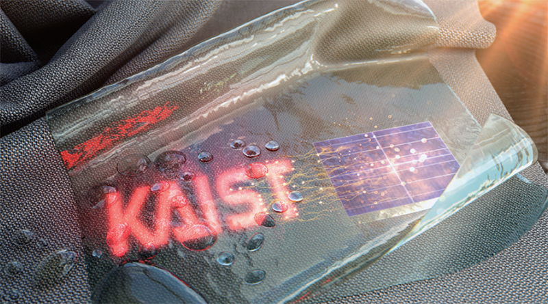

Report by Subjects
Report by Subjects
KAIST RESEARCH ACHIEVEMENTS
Textile-based Washable Wearing Display Module
School of Electrical Engineering Kyung Cheol Choi
Summary
The traditional wearable displays have been focused on implementing the display devices, so there are limitations in their application to actual wearable displays due to the need for external power to drive and the lack of washability. The Prof. Choi’s research team fabricated the wearing display modules on real textile that integrated by polymer solar cells (PSC), organic light-emitting diodes(OLED) and washable encapsulation barrier. Since the PSCs can provide a stable power and the OLEDs can be driven with milliwatts, the modules do not have any external power sources. This wearing display module has opened the era of ‘true-meaning wearing display’ that can be formed on textile, beyond the attachable form of wearable technology.
Background (objectives)
Since the display is capable of simultaneous interactive input and output, it is consolidating its position as the core of next-generation information communication technology (ICT). With the advance of wearable Internet of Things (IoT) devices, which include sensors, power is connected, and internet access is available for clothing, and the display is reborn as a lightweight and flexible wearable technology that breaks away from existing heavy and rigid stereotypes. Because wearable displays can deteriorate rapidly when devices are exposed to the external environment, encapsulation technology is essential. Existing encapsulation technology plays a positive role at room temperature; however, it has the disadvantage of losing its characteristics in a humid environment.
In other words, it is not possible to expect stable operation of a wearable display when it is raining or when the display is washed. Therefore, it is necessary to overcome these limitations for daily use and commercialization of such devices. Principle investigator and his co-workers have proposed a wearable display module that can respond to trends in the smart display era. The goal of this research is to speed up commercialization of wearable display modules by realizing display on clothes worn by humans in everyday life, clothes that can provide excellent fit and are comfortable and soft, as well as washable.
Contents
The biggest challenge to the commercialization of wearable displays is that washing is difficult. In this research, a crack arrestor that suppresses the growth of cracks in brittle material was created to maintain the superior mechanical properties of textiles. In addition, a wearable display module that can be washed through protonation-deprotonation reaction between moisture-sensitive material and polymer material is under development. It has been proven that if it is possible to prevent hydration through protonation-deprotonation reaction between heterogeneous materials, displays can be washed without degradation. To this end, a new encapsulation technique was developed in which a flexible silica polymer solution and a nano-stratified structure made of aluminum oxide (Al2O3) and zinc oxide (ZnO) were laminated. Improvement of washing characteristics through protonation-deprotonation reaction was confirmed through Fourier-transform infrared spectroscopy (FTIR), water vapor transmission rate (WVTR), and surface roughness change analyses.

In the past, because moisture and oxygen can be introduced through cracks, thin-film encapsulation technology was used to fabricate compact and dense encapsulation barriers without cracks. However, this study, based on the Griffith crack model, proved that flexibility can be greatly increased when artificial voids are introduced into thin-film encapsulation materials. The Griffith crack model generally explains that, when cracks occur inside an encapsulation barrier, stress is focused at the edges of propagating cracks because the radius of an individual crack tip is as small as the distance between atoms. Accordingly, it can be seen that the introduction of artificial voids can significantly reduce local stress at crack tips because voids enlarge the edge radius. To introduce such artificial voids, a chemical reaction such as etching was employed. Finally, using a thermal compression process, planarization technology was developed to reduce the surface roughness of fabric to nano-scale, so that polymer solar cells (PSC) and organic light-emitting diodes (OLED) can be stably operated on fabric. With these techniques, it is possible to fabricate wearable display modules that can operate without external power source, and it has been confirmed that these modules retain their characteristics even after repeated washing over a period of one month.
Expected effect
Clothing, something familiar and convenient to humans, is the optimal platform for wearable displays. Recently, many smart devices have been released in wearable format, such as watches and glasses. However, truly wearing devices can be realized if we implement them on real clothing. The wearable display modules in this study provide comfort and a convenient environment for users because they are not even conscious that they are wearing these devices. In addition, it can be said that commercialization possibility has been proven because the ability of washing has been confirmed. These devices can be applied to the fashion and textile industries, combining aesthetic design and display, and can be utilized in the healthcare industry through interworking with various smart devices. Therefore, it is expected that this technology will ultimately develop into a basis for the smart fashion, textile, medical, and various healthcare industries.
Research Outcomes
[Paper] E. G. Jeong, Y. Jeon, S. H. Cho, and K. C. Choi, “Textile-based Washable Polymer Solar Cells for Optoelectronic Modules: Toward Self- powered Smart Clothing”, Energy & Environmental Science 12, 1878-1889 (2019).[2018 Impact Factor = 33.250, selected as a back cover paper]
[Patent] The nano layering encapsulation structure which is possible to wash and electronic device including the same(2019)
[Award] BK21+ Deputy Prime Minister and Minister of Education commendation in engineering
[Press release] Highlighted in Nature Energy (selected as a research highlight, DOI: 10.1038/s41560-019-0341-2)
YTN, YTN Science, video news coverage, and more than 20 domestic and foreign media reports including Forbes
Research Funding
NRF, Leading research center project
NRF, Nanomaterial technology development
KEIT, core technology development project for electronic component industry